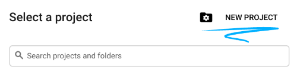
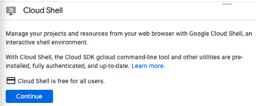

What You'll Learn
Welcome to TBD!
Let's get to know how GCP - Google Cloud Platform help developers to deploy their projects with automatically pipeline.
This event will walk through the following steps.
- Create a new project on GCP
- Deploy the microservice on Cloud Run
- Buildup automatic pipeline on Cloud Run
At the end of the event, you have to submit your microservice to the Leaderboard.
Leader board
The host will send the HTTP POST request. And the microservice should response with the following JSON structure:
{
"username": "Kang", //The registered username
"flag": "jplOsDIaFLhcMRlS" //The 16-word random generated string
}
After the host receive the JSON response. It will update the leaderboard.
To be able to deploy your microservice on Cloud Run you will need to login to Google Cloud. We will apply a credit to your account and you won't need to enter a credit card. It is usually less problematic to use a personal account (e.g. gmail.com) instead of a GSuite account because sometimes GSuite admins prevent their users from using certain Google Cloud features. Also, the web console we will be using should work great with Chrome or Firefox but might have issues in Safari.
This section covers everything you need to do to get started with this event.
Environment setup
Sign in to Cloud Console and create a new project.


Remember the project ID, a unique name across all Google Cloud projects. It will be referred to later in this codelab as PROJECT_ID.
Be sure to follow any instructions in the "Cleaning up" section which advices you how to shut down resources so you don't incur billing beyond this event. New users of Google Cloud are eligible for the $300 USD Free Trial program.
Start Cloud Shell
In this event you're going to work in a Cloud Shell session, which is a command interpreter hosted by a virtual machine in Google's cloud. You could just as easily run this section locally on your own computer, but using Cloud Shell gives everyone access to a reproducible experience in a consistent environment.

Activate Cloud Shell
- From the Cloud Console, click Activate Cloud Shell

If you've never started Cloud Shell before, you're presented with an intermediate screen (below the fold) describing what it is. If that's the case, click Continue (and you won't ever see it again). Here's what that one-time screen looks like:

It should only take a few moments to provision and connect to Cloud Shell.

This virtual machine is loaded with all the development tools you need. It offers a persistent 5GB home directory and runs in Google Cloud, greatly enhancing network performance and authentication. Much, if not all, of your work in this codelab can be done with simply a browser or your Chromebook.
Once connected to Cloud Shell, you should see that you are already authenticated and that the project is already set to your project ID.
- Run the following command in Cloud Shell to confirm that you are authenticated:
gcloud auth list
Command output
Credentialed Accounts
ACTIVE ACCOUNT
* <my_account>@<my_domain.com>
To set the active account, run:
$ gcloud config set account `ACCOUNT`
- Run the following command in Cloud Shell to confirm that the gcloud command knows about your project:
gcloud config list project
Command output
[core] project = <PROJECT_ID>
If it is not, you can set it with this command:
gcloud config set project <PROJECT_ID>
Command output
Updated property [core/project].
OK, now you are ready to deploy the microservice!
Congratulations, you've successfully built and deployed a microservice. Good luck!